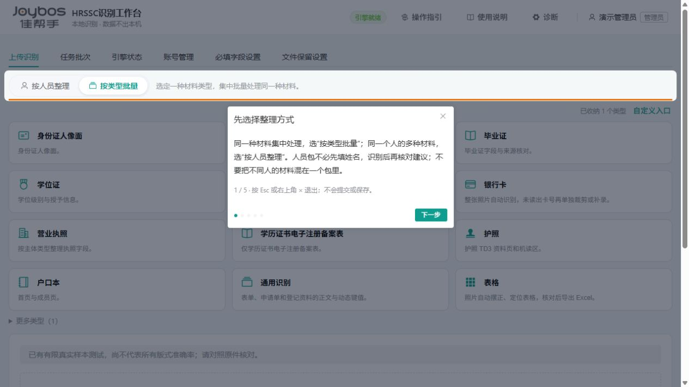
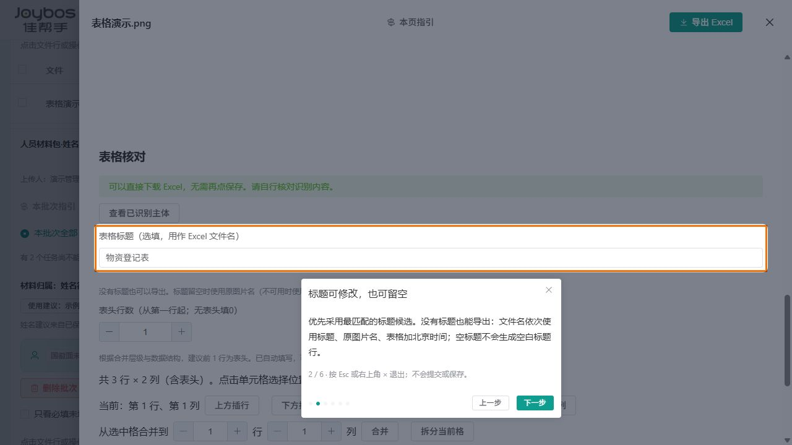
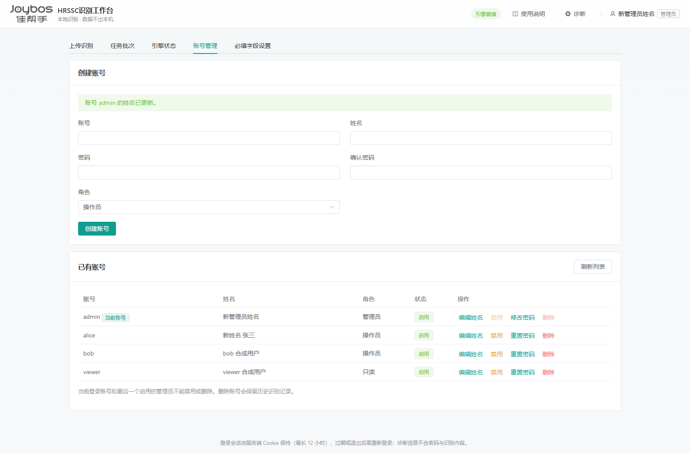
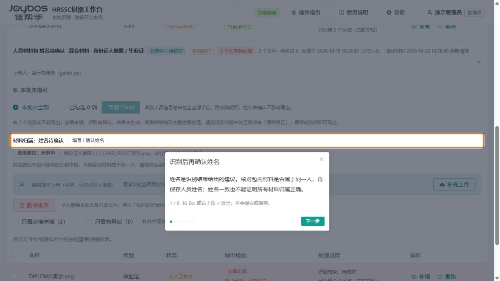

使用说明
点击工作台右上角“使用说明”，即可在当前页面打开本说明。按左侧目录查找步骤，阅读后关闭说明窗口；工作台中的待上传文件和未保存草稿仍会保留。
点击配图可查看完整图片；点击右上角“×”、按 Esc 或点击大图外侧即可关闭。
本说明介绍如何将证件、学历材料、体检报告、表单和拍照表格整理成可下载的 Excel。系统先识别，人工再核对；认不清的内容可以对照原件补填。体检异常的解释和是否录取，由人工按公司制度处理。
第一次使用照这六步做
登录
打开管理员提供的网址，输入自己的账号和密码。
选方式
同类材料选“按类型批量”；一个人的多类材料选“按人员整理”。
传材料
选取文件并核对类型；人员包要逐份检查分类，再整包提交。
找漏项
进入“任务批次”，优先处理“必填未填”“有异议”或表格“导出待处理”的任务。
核对保存
点“查看／补填／核对”，对照原件修正。有修改时先保存。
下载表格
补齐必填信息、处理识别异议后，导出单份、勾选任务或整个批次。
不知道选哪个入口时
| 要做的事 | 选择方式 |
|---|---|
| 一批毕业证、银行卡或体检报告 | “按类型批量” → 选择对应材料。一个批次一种类型。 |
| 整理一个人的多种材料 | “按人员整理” → 一次选齐、核对分类 → 识别后确认姓名。后来补交的资料追加到原包。 |
| 把照片中的行列表格还原为 Excel | “表格” → 核对标题、表头行数、单元格。没有标题也能导出。 |
| 读取申请单、登记资料的正文与键值 | “通用识别”。面试登记表有专用入口，应优先使用。 |
看懂这些提示
| 页面提示 | 实际意思 |
|---|---|
| 待人工核对 | 有内容需要人看一遍，不等于识别失败。 |
| 必填未填 | 规定必须有的信息为空，需要补齐后才能导出。 |
| 必填已齐 | 当前必填信息都有值，不代表每个值都正确。 |
| 有异议 | 有号码位数、格式、校验失败或候选冲突等明确问题。对照原件修正或核对后，点击“保存修正并重新校验”。 |
| 表格：可直接导出／导出待处理 | 完整且表头明确的表格可直接导出；不完整或表头不明时先处理提示。标题不是必填项，空白单元格也不要求填满。 |
在页面上看操作指引
不确定按钮在哪里时，关闭本说明，点击工作台右上角的“操作指引”。系统会把当前要看的区域框起来，并用几句话解释用途；一次只介绍当前页面，不需要从头读完整本说明。
- 工作台页面上传、任务批次、引擎状态，以及管理员设置页，点右上角“操作指引”。上传指引会根据当前整理方式说明入口或分类。
- 某个批次先展开该批次，点“本批次指引”。人员材料包会另外介绍姓名建议、身份证配套、补充上传及总表导出。
- 某份材料先打开识别详情，等结果读取完成，再点顶部“本页指引”。体检报告、表格、通用识别和证件各有对应说明。
- 继续或退出用“上一步／下一步”切换；读完点“完成指引”。随时点讲解框右上角“×”或按 Esc 退出，只退出指引，不关闭正在核对的详情。
如果提示“当前没有显示这个区域”，说明对应内容尚未加载、已收起或当前任务没有该项。可继续阅读，或退出后展开内容再开启；系统不会自动切换材料、打开别人的批次或借用其他按钮。切换页面、关闭详情或退出账号后，指引会结束。
只读账号只显示适用的查看说明；账号管理、必填和保留设置的指引仅管理员可用。不会首次登录就强制弹出，随时可以重新打开。


设置自己的工作台入口
在上传识别页面点击“自定义入口”，长按卡片拖动换位，点卡片右上角“×”收纳；点“+”可从收纳箱添加回来。调整后点击“完成”，才会保存到你的账号。其他人的排列不受影响，你换电脑登录后也能恢复自己的布局。
“恢复默认”让你的账号重新使用管理员设置的默认排列，仍需点击“完成”。保存失败时本页调整会保留，可以重试；如果提示其他页面已修改，请点“重新读取”，确认后放弃本页调整并读取已保存的布局。退出登录会清除未保存的调整。
管理员设置公共默认：进入“自定义入口”调整卡片，再点击“设为默认布局”，确认后保存。没有自定义排列的账号，下次进入页面会使用这套布局；已经自定义的同事不受影响。此操作不会自动保存你自己的个人草稿，个人排列仍需点击“完成”。
本次升级无法判断旧浏览器排列属于哪个账号，因此首次使用会显示默认排列，需要重新设置一次。
1 登录和上传材料
使用电脑浏览器打开工作台网址。输入账号和密码，点击“进入工作台”。使用完毕后点击右上角的姓名，选择“退出登录”。若提示登录失效，重新登录即可；忘记密码时联系管理员或维护人员。
需要修改自己的密码时，点击右上角姓名，选择“修改密码”，填写原密码、新密码和确认新密码，再点“保存新密码”。新密码需8至128个字符。修改成功后会返回登录页，所有设备都需用新密码重新登录；原密码输错时，重新填写即可。
登录有效期为30天。同一账号只能保留一个浏览器登录；在其他设备、浏览器或浏览器配置文件登录成功后，旧登录会失效，旧页面下次操作时需重新登录。同一浏览器的多个标签页可以共用登录。请勿共用账号；登录失效不会取消已提交的识别任务。
登录后能查看和处理哪些材料
| 账号角色 | 可以查看的范围 | 可以进行的操作 |
|---|---|---|
| 操作员 | 自己上传的批次和识别结果。 | 上传材料、对照原图、补填修正、取消或重跑任务、导出 Excel。 |
| 只读 | 归属于自己的批次和识别结果。 | 查阅结果；上传、修正、重跑和导出需要操作员或管理员处理。 |
| 管理员 | 所有账号的批次，包括保留的历史记录。 | 处理所有批次，管理账号、必填字段、默认布局与保留期限，删除已停止的批次，查询和导出操作审计。 |
请使用分配给自己的账号。批次按上传时的账号归属；操作员看不到同事的批次，直接打开同事的任务链接也无法访问。需要协助处理他人的材料时，请联系管理员。
上传步骤
- 先选择材料类型例如毕业证选“毕业证”，学位证选“学位证”。身份证人像面和国徽面分别选择。学信网入口目前对应“学历证书电子注册备案表”。
- 添加文件把文件拖到上传区域，或点击“点击选择”，可一次选择多份。传错时删除对应文件，或用“一键清除”重新选择。
- 检查后提交确认类型和文件都正确，再点击“开始识别”。提交成功后会进入任务批次，可切回上传页继续提交其他类型。

整理一个人的各种材料时，选择“按人员整理”，无需预填姓名，选齐材料并核对分类后整包提交；识别后再确认姓名。也可选择“按类型批量”，集中识别同一种材料；此模式切换类型会清空未提交文件。人员包还可统一补充多种材料，详见第10节。体检 PDF 建议上传完整原文件，照片尽量清楚、端正、无遮挡。
2 查找批次和缺失信息
打开“任务批次”，点击批次标题展开文件列表。批次按材料类型命名，较新的批次排在前面；时间按北京时间显示。
看清上传人：批次标题中的“上传人：姓名（账号）”说明谁提交了这批材料。管理员可以据此区分不同经办人的任务；管理员代为修正、审核或重跑后，上传人仍保持不变。
管理员看到“已删除”的上传账号时，表示账号已移除，但批次仍保留；“历史账号（未关联）”或“未知上传人”表示旧记录缺少可恢复的账号资料，这类记录由管理员查看和处理。
删除不再需要的批次：管理员展开批次后点击“删除批次”，核对名称和文件数量，再点击“永久删除”。待人工核对的记录也能删除；有排队或识别中的任务时，需等待任务停止。删除会同时清理服务器上的原文件、识别结果和处理历史，无法在程序中恢复；电脑上的原始素材不受影响。操作员和只读账号没有此入口。若提示“部分文件暂未清理”，记录已移除，请联系维护人员重启服务补清。

- 按时间找用“日／周／月”和日期选择器缩小范围。找不到时清空日期，查看“全部日期”；旧记录可直接点底部的数字页码，也可输入页码跳转。切换日期或每页数量会回到第一页；翻页不会停止其他批次的识别。
- 核对识别异议批次中“有异议”会列出需要核对的字段，也可点选“只看有异议”快速查找。打开详情，核对或修正当前内容后，点击下方“保存修正并重新校验”即可完成核对，无需另点确认或填写理由。未保存核对前不能导出；必填缺失仍须补齐。
- 优先补缺失批次标题会显示“几个任务缺必填”。展开后点选“只看必填未填”，即可只看需要补录的文件。
- 直接打开处理“导出检查”列会列出缺少的中文字段名。点“补填”进入修正；没有缺失时点“查看”核对。补齐并保存后，标记会更新。
| 任务状态 | 你需要做什么 |
|---|---|
| 排队中／识别中／整理中 | 等待处理，任务列表会自动刷新。不要反复上传同一文件。 |
| 待人工核对 | 打开结果，对照原件核对和修正。 |
| 已完成 | 人工处理已完成；使用前仍可抽查重要信息。 |
| 处理失败／已拒绝／已取消 | 先看提示；有部分结果时可查看。必要时重跑或更换清晰材料。 |
需要集中整理一个人的不同材料时，可新建人员材料包，再在批次中点击“补充上传”。包内展示身份证两面是否上传；国徽面可选，两面已上传仍需人工核对归属。未指定人员的类型批次和历史批次不能追加，请按第10节新建人员材料包。
重跑前会弹出确认：重跑会清空当前显示的识别结果和人工修正。需要保留时，先取消并导出当前结果；本页面暂不支持恢复历史版本。
如何看识别进度
| 显示内容 | 实际在做什么 |
|---|---|
| 排队等待 | 尚未开始处理。同一识别通道按账号轮流处理，每次一份；正在处理的材料完成后继续调度。 |
| 准备文件中 · 已准备几页 | 读取文件、准备需要识别的页面。 |
| 文字识别中 · 已处理 20/40 个区域 | 已处理40个文字或表格片段中的20个。进度条按实际处理量变化，不是剩余时间估计。 |
| 整理字段中／校验结果中 | 正在把识别文字整理成字段并检查结果，仍需等待。 |
| 识别结束，待核对 | 机器处理已结束，可以打开结果进行人工核对。 |
多人同时使用时，一个账号的大批材料不会连续占满同一识别通道。自己的材料按入队顺序处理，拆成多个批次不会增加处理机会；重跑的材料重新排到自己队列末尾。正在处理的长文件不会被中途打断，因此仍可能需要等待。将鼠标移到“处理进度”，可查看本次入队和实际开始时间（UTC+8）；历史记录未保存的时间不显示，系统不提供固定排队名次或预计完成时间。
某些 PDF 可以直接读取文字，所以会显示“无需图像识别”。出现“几个区域不完整，请核对”时，请重点检查相应内容；已处理完所有区域，也不代表没有漏字、漏项或识别错误。
注意保存时间：批次标注当前剩余材料中最近的“到期清理”时间。管理员可在“文件保留设置”选择7天、15天、30天或永不清除，初始为7天；新旧文件统一按各自原上传时间计算，追加不会延长原有材料的期限。批次显示“永不自动清除”时不再到期清理，仍可由管理员手动删除。需要长期保存时，请及时导出表格，并保留电脑上的原始材料。
管理员调整保留期：进入“文件保留设置”，选择时长后点击“保存设置”。弹窗会说明对所有账号新旧文件的影响，并展示读取设置时已超期、将延后清理的文件数量；数量可能随时间变化。点击“取消”不保存。缩短期限或从“永不清除”改为有限天数，旧文件可能在下一次自动清理时删除；原件、识别结果和修改历史一起清理，正在排队或处理的文件延后到处理结束或取消后清理。请先导出需要的内容。延长期限无法恢复已删除的数据；设置重启后仍保留。
3 人工核对和修正
点任务的“查看”或“补填”后，会打开结果窗口。左侧是原件，右侧是识别结果及“人工核对与修正”。左右中间的分隔条可以拖动，双击可恢复宽度。

- 对照关键内容先看姓名、学校、证件编号、日期等重要信息。识别结果可能漏字或读错数字，系统不展示置信度分数，请直接对照原件核对。
- 在修正区填写向下找到“人工核对与修正”。把空白的必填项补上，把识别错误的值改正。带“必填”的字段必须填写真实内容。
- 处理原件没有的信息选填项在原件中确实不存在时，可选择“原件未记载”或“不适用”。必填项原件也没有时，补取材料或请管理员确认规则，不要编造。
- 保存点击“保存修正并重新校验”。保存同时完成当前内容的异议核对，无需单独确认或填写理由。缺失值和未选定候选须先补齐。保存后检查“必填未填”和“有异议”是否消失。
在原件对照中框选文字
点击“原件对照”上方的“框选识别文字”，或点击原图进入全屏查看与框选。弹窗会打开当前查看的页，也可以选择其他页码。拖动框出要用的文字，可一次选择多行，再点“识别选区”。这只是临时框选，不会修改原图。
识别出的原始文字会显示在结果卡片的文本框中。对照原图核对、修改后，点“复制文字”，再粘贴到需要补充的字段、体检明细或正文中；复制后窗口保持打开。不会自动覆盖已填内容。编号开头的 0 和日期的实际精度要保留，最后点击“保存修正并重新校验”，导出才会使用新值。
日期可直接复制格式建议：识别到“2024年6月”时，卡片额外显示“2024-06”；“二〇二四年六月三十日”对应“2024-06-30”。只有“日”字被遮住、年月日数字齐全时也支持，例如“2024年6月30”仍建议“2024-06-30”。原始文字仍保留，手工改字后建议会同步更新。点击对应日期的“复制日期”，再粘贴到日期字段。多个日期按原文顺序列出，请自行区分入学、毕业和发证日期；只有年月时不补某一天，非法或残缺日期不猜。建议不会自动填写或保存字段。
如果自动复制失败，窗口会保留原文及建议：选中要复制的文字或日期值，按 Ctrl+C（Mac 为 ⌘C）复制，再关闭窗口。框选识别通常需要几秒，繁忙、超时或未读出文字时，可缩小选区重试，也可手工填写。模糊或被遮挡的文字仍需人工核对。切换材料或页码后需重新框选。
毕业证尤其要核对这些内容
学校名称、专业、学历层次、学制、证书编号和毕业日期。2.5 年不要误写成 5 年，专科和本科也要看清。证书“某年某月至某年某月”的前一个日期是入学日期，后一个是毕业日期；证书落款日期对应发证日期，两者不能互相代替。
4 体检报告先看台账信息
打开体检报告后，先核对“体检台账字段”，再看检测项目和异常信息。体检字段旁的“定位”“相关来源”“各项目来源”可帮助查看原文；证件当前只提供原图查看，不做字段定位。
点击“定位”后，左侧会加载对应页面并滚动到来源位置；首次打开多页报告时，图片可能需要稍等片刻。没有可靠定位框时会显示整页，可直接对照原文。左侧也可输入页码后点“跳页”，或点击原图放大查看；读取失败时先点该页“重试”或上方“重新读取”。
个人信息和体检机构
先核对姓名、性别、年龄、体检日期、体检机构、报告日期、身高、体重和血压。常用报告的个人信息可在“一、个人信息”下的表格找到；体检机构可检查封面右侧底部的机构名称。不同机构版式可能不同，识别不到时对照原件补录。
体检大项目和数量
“体检项目”指内科、眼科、血常规等大项目，来源是“八、本次体检项目意义”标题下“项目”这一列。把大项目名称填进“体检项目”清单，建议每行一个；重复项目只保留一次。
“体检项目数量”由这份大项目清单自动计算，不能直接修改数字。发现数量不对，先修改“体检项目”清单，再保存。

六类检查从哪里看
血常规、尿常规、心电图、DR 影像、腹部彩超、肝功五项（生化检测）应分别查看对应报告页。血常规、尿常规和生化检验往往只有明细，没有“小结”，仍需看结果、参考范围和异常标记；肝功相关内容可在“生化检验报告单”中查找。
5 体检异常和未识别怎么处理
| 显示内容 | 如何理解 | 操作建议 |
|---|---|---|
| 已识别明细未见异常 | 当前识别到的明细都有正常依据，不能据此认为整组已识别齐全。 | 对照原件检查是否漏了明细或异常项。 |
| 未见异常 | 原报告有明确正常结论，或经人工核对填写。 | 对照结论和检查范围，不代表整份报告无异常。 |
| 未识别 | 系统没有提取到可用内容，不能据此认定正常。 | 查对应检查页；有内容就人工补录。 |
| 报告未载明 | 该报告确实没有记载这一项。 | 确认原件未记载后，选填项留空即可；系统判定或此前保存的“报告未载明”仍会显示。 |
核对异常指标
查看“仅异常”和“仅待判定”，核对项目名称、检测结果、单位、参考范围、报告等级和异常诊断。常见提示有结果偏高／偏低、阳性、异常符号，以及报告中的风险等级；这些是核对线索，不能直接当作录取结论。
身高、体重可以保留在台账基本字段中，但不计入异常汇总或异常数量复核；BMI（体重指数）仍需核对。“小结”是原文结论，不作为独立检测项目重复计数。
漏项或重复项可以人工修正
展开“编辑检测项目／增删项目”。发现漏项可点“新增项目”，至少填项目名称和检测结果；发现重复或误收的项目可勾选“删除该项目（提交后生效）”。把原报告的等级和诊断一并补齐后，再保存。
报告写着共有几项异常时
找到“您共有 x项异常需进一步检查并治疗”这类标题，逐条核对其下的清单，不固定在第六页。“清单条目数吻合”只表示这份清单的数量对上了，不代表所有化验异常都找全。数量不符时，检查有无漏条、重复条或关联错误。
需要修正这份清单时，展开“清单声明数／增删条目”，按原件填写标题、声明数量、所在页和修正依据。不要为凑数量，把正常项、身高体重或“小结”算进去。
是否录取由人工决定
系统辅助提取信息，不自动给出公司异常分级或录取结论。按公司标准完成审核，必要时由相关专业人员复核，再在导出的台账中填写人工意见。
表格照片转 Excel
- 选择入口：在“上传识别”选“按类型批量”→“表格”，上传表格照片。支持JPG、PNG、HEIC；每张单独处理，暂不支持PDF和自动拼接续表。
- 核对主体：系统尝试摆正照片并寻找主表。详情页点击“查看已识别主体”对照原图；选错时用“调整主体裁剪（新建任务）”。旧任务和已保存的修正会保留。
- 核对标题和表头：系统优先采用最匹配的有效标题候选，可切换候选或自己填写。标题是选填项，没有标题可以留空。Excel文件名优先用标题；无标题用原图片名，原图片名不可用时用“表格_时间”（北京时间）。系统会在有明确依据时自动填写表头行数（支持多行）并高亮；无法可靠判断时请手动设置，没有表头填0。自动建议仍需对照原图核对，可直接修改后保存；重新打开保留已保存的设置。旧识别结果可能仍需手动选择行数。
- 补充修正：直接改表格单元格；点击格子选择位置后可插入、删除行列或合并、拆分。合并不能覆盖已有文字。表外补录、签名和划除行请特别核对；可使用原件对照的“框选识别文字”辅助复制，原图为空的格可以留空。
- 下载 Excel：识别完整且表头明确时，直接下载，无需先点保存。只有修改内容后才需要点“保存表格修正”。有多个标题候选时已自动采用排名最前的有效候选，只有需要修改时才切换并保存；若识别不完整，请补正或明确确认只导出当前保留内容后保存。列表的“导出待处理”会说明具体原因。单份下载XLSX，多份下载ZIP，同名自动加序号。
照片表格有标题时，顶部标题为微软雅黑21号；无标题直接从表头或数据开始，不留空白标题行。表头和数据均为微软雅黑12号，表头橙色。所有类型Excel的数据底色统一白色；现有证件、体检和人员包Excel的表头、数据也统一12号，原有结构保持。可下载不代表已人工审核，手写和复杂表格仍需仔细核对。


通用识别：表单、申请单、登记资料
选择“通用识别”上传照片或PDF。系统尝试摆正照片、找到表单主体，并把清晰的标签和对应内容整理成键值对，例如“部门 → 研发部”。重复字段会分别保留，没有内容的字段允许留空。
- 核对原文：展开“初始识别内容与来源”查看原始文字；“查看来源区域”可定位到原图。复杂表格会保留在原文和只读表格中，不保证每个单元格都能配成字段。
- 补改字段：在“人工核对与修正”修改正文、字段名和内容，也可新增或删除键值。“原始来源”可查看这个字段最初来自哪里；人工新建的字段没有自动来源。
- 保存并导出：内容有修改时先保存，再点“导出 Excel”。Excel包含已保存正文和全部键值；同名字段分别保留。若希望得到可逐格编辑、保留合并单元格的Excel，请用“表格”入口。
原文和位置提示方便核对，不代表所有内容已识别完整。手写、模糊照片、多个表单混在一页的情况仍可能漏项或配错，请对照原件补充。
6 导出 Excel
先保存所有修改，再导出。当前规则主要检查所选任务是否有可用的已保存结果，以及管理员规定的必填信息是否齐全、明确识别异议是否已处理；“待人工核对”本身不是禁止导出的条件。
三种导出方式
| 需要什么 | 在哪里操作 |
|---|---|
| 只导出当前一份 | 打开结果窗口，点击右上角“导出 Excel”。 |
| 导出本批次全部 | 展开批次，选择“本批次全部”，点击“下载 Excel”。 |
| 只导出勾选的几份 | 在文件列表左侧勾选任务，再选择“已勾选”，点击“下载 Excel”。 |

按钮不能点或导出被阻止时
- 检查有没有选中任务使用勾选导出时，至少勾选一份材料。
- 检查必填项回到批次，用“只看必填未填”找到漏项，补齐并保存。
- 检查任务是否有结果排队、失败且没有结果、取消等任务可能无法导出；等待完成或处理失败原因。
- 检查明确异议在批次筛选“只看有异议”，核对号码、格式或冲突候选，保存后再试。
- 检查保存和权限结果窗口有未保存修改时先保存。只读账号不能导出，需要操作员或管理员账号。
所选范围内只要有一份不满足条件，整次导出会停止。可以先补齐，也可以改为仅勾选符合条件的文件。证件、体检等业务导出以“识别类型＋导出时间”命名；表格入口优先使用表格标题，没有标题时使用原图片名，再无可用名称才使用“表格_北京时间”。文件通常保存在浏览器下载目录。
Excel 使用已保存的修正结果。证件表导出对应业务字段；体检台账包括个人信息、六类检查结果、体检项目数量和异常指标。下载后再检查人员对应关系、编号和异常信息；编号和电话以完整内容显示，表格按公司要求保存和使用。
7 银行卡和其他材料
工作台最多展示12张类型卡片，其余自动收纳，仍可从“更多类型”选择识别。需要把收纳的类型放回工作台时，点击“自定义入口”，先收纳一张，再从收纳箱添加并点击“完成”。
面试登记表
选择“面试登记表”，上传应聘／面试登记表照片或PDF。系统提取姓名、性别、年龄、身份证号、手机号，默认这五项都必填；管理员可在必填设置中调整。手机号只读取本人一栏，不取紧急联系人号码，年龄按原表填写内容读取。
手写潦草、勾选不清或填写错栏时，字段可能留空或显示候选。点击“查看来源”对照原件，在人工修正区“采用”候选或直接补填，再点“保存修正并重新校验”。不要只凭身份证号猜年龄或性别。必填项保存完整且识别异议已处理后可导出，Excel保留这五个字段；人员材料包也可加入面试登记表。
所有识别入口的照片、以及没有可用文字层的扫描PDF页，都会尝试自动摆正。原件仍保留；严重透视、折弯或方向不确定时仍需人工核对。带可靠文字层的PDF继续直接提取文字。
银行卡先直接识别
带手写信息的银行卡复印件也从“银行卡”上传，建议一张图片只放一个人的一张卡。系统会尝试分别读取卡面和补充文字，整理姓名、卡号、开户行、开户支行。普通卡片没有姓名或支行时可留空；是否必填由管理员设置。
如果卡面和手写卡号读得不一样，会同时显示候选。点击“查看来源”核对原件，再在人工修正区域点击“采用”或手动填写，最后点“保存修正并重新校验”。选中候选本身还没有保存。开户行是银行名称，开户支行是具体网点，不能只凭卡号推断支行。
复印较浅、手写潦草、混放多人材料时仍可能误读或漏项。请逐位核对卡号，确认姓名与卡片属于同一人；不要只看能否导出就认为识别无误。
选择“银行卡”，直接上传清晰的单张卡片照片并开始识别，无需事先把每一张都裁剪。结果出来后，逐位核对卡号，并检查发卡行；自动匹配的银行名称也可能缺失或有误。
- 读不清的卡片再处理打开该任务。若提示卡号未可靠读出，点击“裁剪这张重新识别”；也可以直接在“人工核对与修正”里补填卡号。
- 旋转并裁剪用“向左旋转90°”或“向右旋转90°”把卡号转正，再拖动框选完整卡号一行。框选横向的号码条，不要框整张卡；旋转后需要重新框选。点击“确认裁图并上传”。
- 检查新结果裁图会单独提交为新任务，原任务和其他卡片保留。导出时选择最终核对正确的任务，避免把同一张卡重复导出。
选对材料类型
| 材料 | 选择和核对重点 |
|---|---|
| 身份证 | 人像面与国徽面分开选；核对姓名、号码、签发机关和有效期。 |
| 毕业证／学位证 | 分别选择对应入口；重点核对校名、专业、层次或学位、编号和日期。 |
| 学信网材料 | 目前专门入口对应“学历证书电子注册备案表”；其他网页截图不能直接当作这类表。 |
| 护照／户口本／营业执照 | 选择对应类型；户口本还需核对成员页和是否漏人。 |
| 其他文件 | 表单、申请单、登记资料可选“通用识别”，核对动态键值与原文；固定证件仍优先用专用入口。 |
所有类型都需要对照原件。遇到号码遮挡、反光、图片模糊、严重倾斜或缺页时，优先补取清晰材料，不要仅凭识别结果猜内容。
8 常见问题和反馈方法
上传时提示文件解析失败
先确认文件能在电脑上正常打开，且格式和大小符合要求。不要只修改扩展名把其他文件伪装成 JPG 或 PDF。可重新保存为清晰的 JPG／PNG，或重新导出 PDF 后再试。多份一起失败时，可分小批或逐份提交，查找有问题的文件。银行卡请用图片。
处理很久或超时了
体检 PDF 页数多，通常比证件慢。先查看任务状态，任务仍在处理时不要重复上传。出现失败或超时后，先打开已有结果检查是否有部分内容，再决定补录、重跑或反馈；重跑前确认没有需要保留的未保存修正。重跑生成的新结果需要重新核对。
体检详情打不开，或左侧原图一直空白
- 先分清哪一部分没出来右侧有识别结果、左侧图片读取失败时，先点原图的“重试”或“重新读取”，无需为了加载图片重新识别。
- 重新打开结果先保存修正，再关闭结果窗口并重新打开。服务刚更新时，可在保存后按 Ctrl+F5 刷新网页；刷新会丢失未保存的草稿。
- 看任务是否已停止“待人工核对”可打开已有结果；“已取消”不会自行继续，需要处理时再点击“重跑”。排队或运行中的任务先等待。
- 仍有问题就反馈保留错误编号和诊断信息。请管理员检查“引擎状态”；模型启动中需等待，模型不可用时由维护人员处理。不要反复上传同一份报告。
保存后仍然显示待人工核对
可能还有冲突、位数或校验失败、覆盖不完整等核对问题。打开任务详情，顶部红字会列出需要人工核对的具体项目；缺失必填会直接红框标在字段上。“保存成功”“已完成”和“允许导出”不是同一件事；是否可导出以当前“导出检查”为准；明确的识别异议需核对或修正后点击保存。
提示结果或设置已经更新
可能有人修改了同一任务，或管理员调整了必填设置。先记下尚未保存的内容，点击“读取最新版本”，重新核对后再保存。不要连续重复点击保存。
列表不更新或找不到刚上传的批次
点击“刷新”，检查日期范围，必要时切回“全部日期”。如果刚刚取消了等待上传，服务端仍可能已经接收，先查任务列表，避免重复提交。
还要确认右上角显示的是上传时使用的账号。操作员只能看到自己的材料，换账号登录不会带走原账号的批次；需要查看同事或历史账号的记录时，请联系管理员。
怎样把问题反馈给维护人员
- 记录发生位置记下出现问题的时间、材料类型、文件名，以及当时点了哪个按钮。
- 保留错误提示截图错误提示；打开右上角“诊断”，使用“复制”或“下载 JSON”保存错误编号等信息。
- 说明预期和实际例如“原件学制是2.5年，结果显示5年”，或“尿蛋白阳性没有进入异常指标”。通过公司约定渠道反馈。
如果没有诊断记录，仍可提供问题描述和截图。截图可能含个人信息，按公司内部要求传递；说明书不包含任何真实账号密码。
管理员怎样查历史日志
- 打开右上角“诊断”入口出现红点，表示有新错误记录，或日志记录、备份、连接需要关注。页面显示最近备份时间和近24小时错误记录数；这个数字不是识别失败的文件数量，同一个问题可能有多条记录。
- 缩小查询范围选择问题发生的日期（北京时间），必要时选择ERROR（错误）或CRITICAL（严重故障）；也可以粘贴错误编号、请求编号或任务编号，再点“查询”。默认只记录这两类故障，正常运行和一般提醒不再新增日志；页面和诊断包仅包含ERROR与CRITICAL，低等级历史文件仍保留供维护人员离线排查。
- 先看中文问题说明日志列表直接显示问题说明，展开左侧箭头可查看说明、错误编号和技术详情。说明帮助定位故障环节，具体原因仍需结合技术详情判断。
- 下载交给维护人员点击“下载诊断包”保存当前筛选的记录，中文说明和技术信息会一起保留。若提示内容过大，只下载了部分记录，请缩小日期范围重新下载。若提示日志损坏或无法读取，页面和诊断包会标记“不完整”，仅包含可读取的记录；原文件已保留，请联系维护人员，空列表不能说明没有错误。
遇到“服务器繁忙”或“已有同类操作正在处理”，请保留当前页面，等待已有操作完成后再重试。上传文件选择、修正草稿和导出勾选会保留，请勿连续点击。上传和导出繁忙时可能短暂排队；若是断网或请求超时，请先刷新批次确认是否已经收到文件，再决定重试。
服务端运行日志保留7天，自动压缩备份保留30天，不受“文件保留设置”影响。页面刷新不会删除已经上报的服务端日志。本页错误卡片最多20条，刷新、退出或换账号会清空；网络不通时上报可能失败，应先复制或下载本页卡片。普通账号只查看本页错误信息，历史服务端日志仅管理员可查。
如果页面提示日志写入或自动备份失败，应联系维护人员检查磁盘空间和目录权限。网页打不开时，可在Windows服务器运行程序目录中的collect-diagnostics.cmd收集日志，文件保存在output目录。日志备份不包含证件原图或识别正文，也不会自动截图。
9 管理员设置
普通操作员可上传、核对和导出自己的批次；只读账号只能查看自己的批次和结果。管理员可以查看、处理全部批次，并使用本节的账号管理功能。批次标题标注上传人的姓名和账号，管理员帮助核对不会改变上传人。
创建其他账号
- 进入账号管理点击“账号管理”，查看现有账号，避免重复创建。
- 填写新账号填写账号、姓名、密码和确认密码，再选择角色。日常经办人员一般选“操作员”，只查阅的人员选“只读”；按职责决定是否授予管理员。
- 完成创建点击页面创建按钮，确认新账号已在列表中出现，再将登录信息单独告知使用人。密码长度按页面要求填写，当前为8至128个字符。
管理已有账号


- 找到对应账号在“已有账号”列表中核对账号和姓名，再点击“编辑姓名”。账号较多时，可点击底部数字页码查找，或调整每页数量。
- 修改并保存姓名填写1至80个字符的姓名，点击“保存”。姓名不能为空；登录用的账号保持不变。
- 检查显示重新查看批次，上传人会显示最新姓名；若未更新可点“刷新”。修改当前管理员自己的姓名时，右上角姓名也会更新。
编辑姓名不会改变密码、角色、启用状态或批次归属，也不需要重新识别材料。当前页面提供的“编辑姓名”只修改显示姓名。
- 禁用或启用在已有账号列表找到对应账号，点击“禁用”并确认。该账号立即退出，禁用期间不能登录。需要恢复时点击“启用”，再让对方重新登录。
- 重置密码忘记密码时，管理员点击该账号的“重置密码”，填写两次新密码，点“确认重置”。所有旧登录立即失效。已禁用账号仍保持禁用，需要时另行启用。
- 删除账号账号不再使用时点击“删除”，确认账号无误后点“确认删除”。删除不能撤销，历史任务和识别记录保留给管理员查看，上传人标注“已删除”。同名重新创建是一个新账号，不能查看原账号的材料。
当前登录账号和最后一个启用的管理员不能禁用或删除。修改自己的密码需使用右上角菜单，填写原密码。不要通过重复创建账号来重置密码。
按材料类型调整必填信息

- 选择材料类型打开“必填字段设置”，选择毕业证、体检报告等要调整的类型。
- 勾选并保存勾选必须填写的项目，点击“保存设置”。未选中项是选填；自动计算的字段不能设为必填。
- 核查影响设置对所有账号、当前任务和历史任务统一生效，不需要重新识别，也不会改变已经保存的识别内容。需要回到原规则时点“恢复默认”。
文件保留期限与清理
- 先看当前设置管理员打开“文件保留设置”，可选 7 天、15 天、30 天或“永不清除”。这是整个平台共用的设置。
- 保存前读影响提醒新设置同时应用于新旧文件，期限从每份文件原上传时间计算。点击“保存设置”后会弹窗提醒影响范围；确认无误再保存。
- 提前保留需要的结果缩短期限可能让旧文件立即到期。到期会清理原件、识别结果及修改历史；正在排队或处理的文件延后到处理结束或取消后清理。已清理内容不能靠延长期限恢复。
批次会显示到期清理日期。重跑、保存修正或追加新材料不会延长原有文件的期限。“永不清除”只关闭自动到期清理，管理员仍可手动删除批次。
操作审计：查询谁做了什么
只有管理员能看到“操作审计”。这里主要看哪个账号在什么时间上传或追加了材料、导出了表格、删除了批次、手动重识别或取消，以及账号管理和全局设置变更。识别开始/完成、查看原图、框选识别和保存修正不列入审计，故障仍查看“诊断”。
- 先筛选默认显示最近7天，按北京时间倒序。可按日期、操作者、操作、结果或完整批次编号筛选，再点击“查询／回到首页”。
- 按页查找底部显示匹配总数，可点击1、2、3等页码或输入页码直接跳转，每页可选20、50、100条。查询失败时保留上一页内容并显示错误；重新查询后读取最新记录。
- 直接看操作摘要新上传、追加、删除和导出按一次提交记一条，例如“上传材料（10份材料）”。设置变更会显示“文件保留期限：7天 → 15天”等中文说明。账号改名或删除后，仍保留当时的账号身份。
- 分清导出结果导出成功表示服务端已生成文件，不保证浏览器已保存到电脑；失败会明确标注。旧版本结果未知的记录不会补认成功，缺少同次操作标识的旧记录也不会强行合并。
- 导出记录“按筛选条件导出 Excel”使用与列表相同的精简范围，导出全部匹配摘要，不只当前页。最多10000条；超出时缩小日期或账号范围。
旧审计记录仍保留，仅按新范围过滤；材料和人工修正结果不会因审计精简被改动。审计摘要不会随文件到期清理，也不能在页面修改或删除。密码、Token和Cookie不会记录。
10 人员材料包和补充上传
人员材料包用于集中整理一个人的证件和体检报告。普通类型批次仍可一次处理多人的同类材料；请勿把多人的文件放入同一个人员材料包。
- 一次选齐在“上传识别”选择“按人员整理”，把此人的毕业证、学位证、银行卡、体检报告等一起选入，无需先填写姓名。系统逐份建议材料类型；“内容分类”来自文件内容，“文件名提示”只参考名称，都需要核对。
- 核对后整包提交每份文件旁都能修改类型。遇到“待选择”或分类失败，直接选择正确类型即可；不必等待或反复重新上传。每个文件应是一种材料，包含多种证件的PDF请先自行拆分。全部选好后点击“整包提交”，确认材料属于同一人，成功后进入该包。一个文件不合格时会拒绝整次上传，请修正后重试。
- 识别后确认姓名进入“任务批次”，展开材料包，查看“使用建议”旁的来源文件。点击建议或“填写 / 确认姓名”，核对原件后点击“保存姓名”；之后可点“修改姓名”。多个姓名表示可能识别有误或混入他人材料，必须自行核对，系统不会自动替你移动文件。已保存姓名不会被后续识别覆盖。
- 补充其他材料在材料包点击“补充上传”，一次选入各种补交材料，核对类型后点“统一追加”；姓名待确认也可追加。已有结果和人工修正保留。自动分类不会替你判断这些材料是否属于同一个人。
- 导出人员材料选择“本批次全部”或勾选文件，点击“下载 Excel”。第一张“人员信息总表”一包一行，集中展示本次所选材料的全部字段，包括选填项、体检项目名称和异常指标；空值仍保留对应列。各列注明材料类型，多份同类材料按第1份、第2份分别保留。所有导出工作表不再附加“来源文件”列，姓名候选仅注明姓名和材料类型；需要查看原件时回到平台打开对应任务。后面保留分类明细和18列体检审核记录台账。总表较宽，可向右滚动查看，姓名和姓名状态两列会固定显示。姓名未确认显示“姓名待确认”，不会额外阻止导出；仍需各任务已保存的必填值齐全且识别异议已处理。
- 核对配套提示只需要人像面信息时，可仅选择“身份证人像面”识别，国徽面是可选材料，不补交也可按人像面的必填项导出。显示“两面已上传”只表示文件都在，不保证识别成功、属于同一人或证件真实，请对照原件核对。
姓名建议来自已保存的识别字段，不证明证件真实或属于同一人。户口本中的户主、营业执照法人及通用正文不会被当作此人的姓名。同名人员不会自动合并；材料包姓名在包内单独修改，不通过追加修改。普通历史批次保持原样；新建人员包不会自动搬移旧任务。
同包内重复上传完全相同的同类型文件会复用原任务；同一文件选择不同类型会被拒绝。追加不会清空旧任务或人工修正，也不会延长旧文件按管理员设置计算的保存期。文件到期清理后，身份证缺面提示可能重新出现。
各类型已有的样本数量和版式有限；身份证、护照、户口本、营业执照等缺少充分真实样本验收。上传页面会提示这一限制，规则接入不代表识别准确率已经达标。

